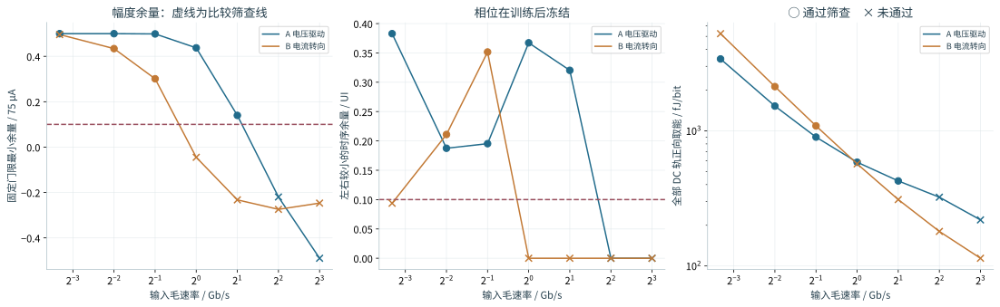
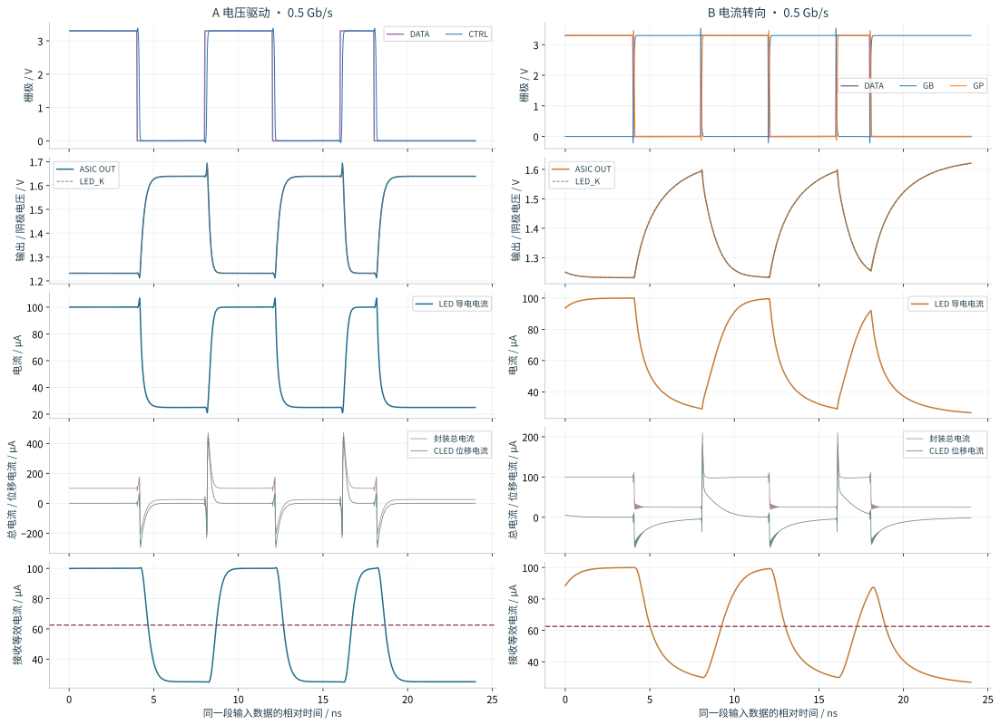
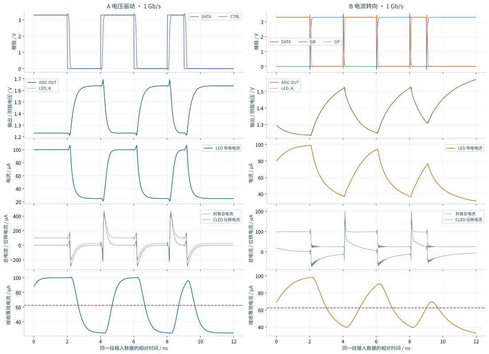
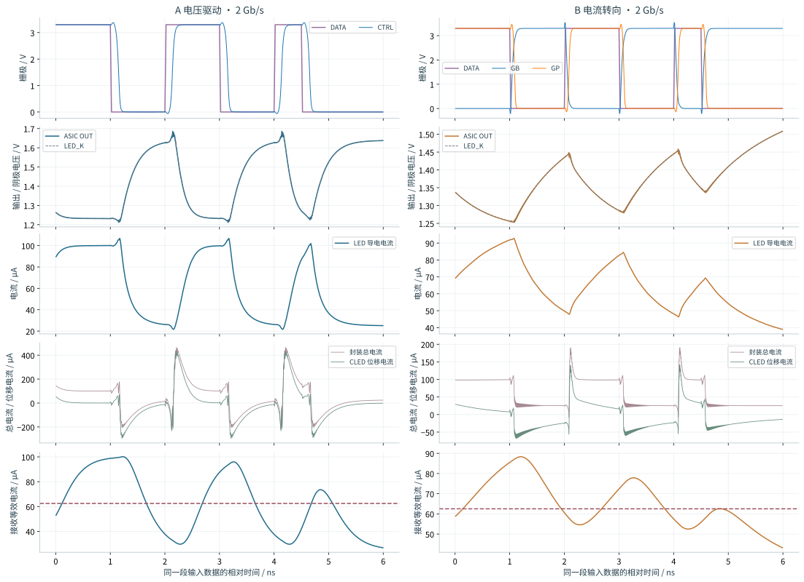
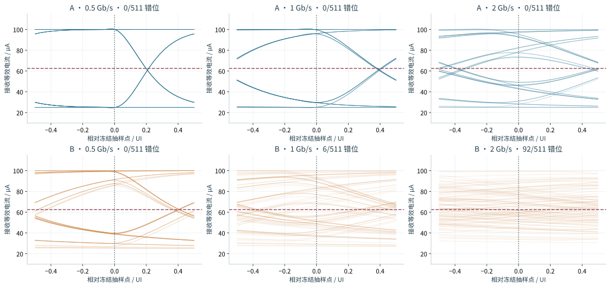
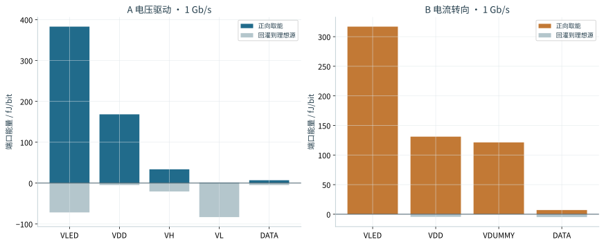
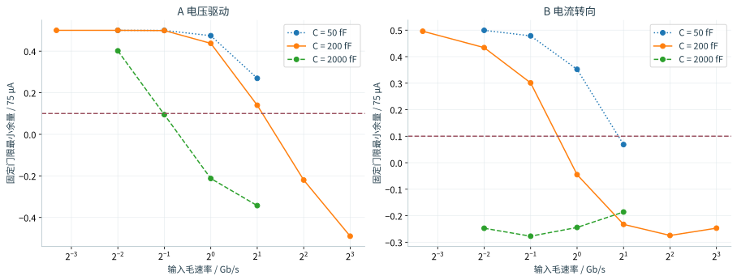
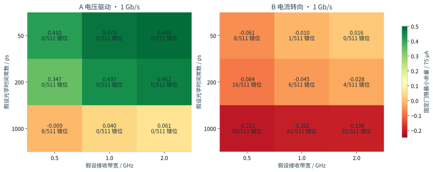

OPEN MICROLED DRIVER ASIC · 2026-10-19 · 实验性研发与教学
一个比特如何变成 LED 电流？
单通道 NRZ 的两种晶体管驱动电路
从共同的负载、真实 MOS 电路，到接收判决与逐电源能量积分。比较对象是本项目的两版具体实现；结论服务于下一轮设计，不代表技术路线的性能极限。
证据等级：GF180 晶体管级 pre-layout 仿真 + 公开测得的 LED 静态 I–V + 假设的动态负载与无噪声接收代理。尚无高速版图、PEX、硅片或光链路测量。
01 · 先读结论
速率、能量和可实现性，需要同时看
A · TT / 27°C / VDD 3.3 V
最高离散信号筛查通过点2 Gb/s在本次共同模型和已完成测试点中
B · TT / 27°C / VDD 3.3 V
最高离散信号筛查通过点0.5 Gb/s不是实测最大速率或 BER 保证
校准的 LED 电流状态25 / 100 μA两版电路均在 TT / 27°C 校准
已记录 96 个实验，96 个完成仿真与分析，0 个仍有数值失败或分析失败。 两版都使用硅基 GF180 的 3.3 V NMOS / PMOS；本轮没有引入特殊晶体管材料。
在两版均通过的 0.5 Gb/s，全部 DC 轨加理想 DATA 端口的正向取能为 A 905.5 fJ/bit、B 1094.6 fJ/bit。这一边界不含实际稳压器与接收机。1 Gb/s 时 B 的取能虽略低，但出现 6/511 错位，不能把该点称为可用的能效优势。该点的垂直眼开口仍略大于零；问题是固定门限和规定余量下未通过，并非证明任何门限都不能判决。
如何读“通过”：独立于训练段的 511 个 PRBS9 验证比特零错位、固定门限最小余量 ≥7.5 μA、左右较小的时序余量 ≥0.1 UI。它是预先设定的教学比较筛查，尚未包含接收噪声、时钟抖动或真实光耦合。器件电压应力另行列出。

相同负载与接收代理下的晶体管仿真；能量越低但信号失败的点，不是可用的节能工作点。 · 点击查看原尺寸 SVG为什么 B 在 0.1 Gb/s 反而标为未通过？该点为 0/511 错位，幅度眼开口约 0.996；训练以垂直余量选出的延迟是 1.0078125 UI，冻结后右侧时序余量只有 0.09375 UI，略低于预设 0.1 UI。它反映当前采样训练规则与时序预算的限制，不能解释成低速带宽不足。本轮保留规则和结果；下一版可只用训练数据同时优化幅度与时序余量。
表中 DC 电源轨能量包含 LED 电源、前置驱动、输出轨或 dummy/参考支路；DATA 为单列的理想输入端口能量。各点分母为 511 个毛比特。数值失败的点在后文保留，不能作为物理速率失败。
02 · 固定比较前提
两条路线只改变驱动电路，共同条件保持一致
这里的 NRZ 如何表示数据？
NRZ（Non-Return-to-Zero，不归零码）在每个比特周期内保持一个电平，连续相同比特无需回到零。本实验采用 25 μA 与 100 μA 两个 LED 导电电流状态；比特周期 UI=1/速率，因此 1 Gb/s 的一个 UI 为 1 ns。这与显示亮度用的低频 PWM 占空比调制是不同的工作方式。
训练负责找时序，验证负责检查结果
先发 32 bit 交替预热，再发 254 bit PRBS7 训练、511 bit PRBS9 验证和 32 bit 尾部保护。抽样延迟只在训练段选择，搜索范围为 max(4 UI, 3 ns 向上取整至 UI)，网格 1/128 UI。训练评分裁去末尾相应数量的比特，保证任何候选采样时间都不会读入验证段。
随后冻结抽样延迟、62.5 μA 门限和 75 μA 归一化跨度。每条路线可以有不同的传播延迟，但不能用自己的失真幅度重新归一化。完整测量约定保留定义、窗口和公式。
03 · 电路如何工作
A 控制阴极电压；B 把调制电流转到两个支路
A：受限输出摆幅的 CMOS 电压驱动
数据先经过两级 CMOS 反相器，再共同控制输出 PMOS 和 NMOS。总计 6 只 MOS；这里只是器件数量，和早期单像素 PWM 的“六 MOS”电路没有通用拓扑含义。前置驱动的栅极信号仍为 0–3.3 V，不能把约 0.44 V 的输出电源轨差直接当作可用的 MOS 栅极摆幅。
 实际 SPICE 子电路 A：标注每只 MOS 的 D/G/S/B、尺寸、输出电源和共同 LED 负载。 · 点击查看原尺寸 SVG
实际 SPICE 子电路 A：标注每只 MOS 的 D/G/S/B、尺寸、输出电源和共同 LED 负载。 · 点击查看原尺寸 SVGDATA=0：低 LED 导电电流
两次反相后 CTRL≈0。输出 PMOS 导通、NMOS 关断，OUT 被保持在较高电压。VLED 固定，因此 LED 两端电压较低，导电电流约 25 μA。这个电流从 LED 流入 OUT，再经输出 PMOS 进入 VH 电源，VH 必须具备吸收电流的能力。
DATA=1：高 LED 导电电流
CTRL≈3.3 V。NMOS 导通、PMOS 关断，OUT 下降，LED 两端电压上升，电流约 100 μA。低阻输出级还可提供较大的瞬态电流来改变结电容电压；这部分瞬态电流不能全部视为发光电流。
校准：VH≈1.611025 V，VL≈1.172154 V
OUT≈1.638636 V / 1.231990 V；Vf≈3.36134 V / 3.76791 V
栅极摆幅：3.3 V；LED 电压变化：约 0.40657 V
VH/VL 是理想的可吸收电流电源。本轮尚未设计实际产生这两个电压的稳压器；输出也不是被数学上严格钳在 VH 与 VL 之间。电源回灌与 MOS 压降都要保留。
B：带直流预偏置的 NMOS 电流转向
电路共有 9 只 MOS。RREF 与二极管连接的 MREF 产生 VBIAS；MBASE 提供约 25 μA 基线，MI 提供约 75 μA 调制尾电流；ML / MD 决定这股调制电流从 LED 还是 dummy 支路流入。这个参考支路已落实为器件，但它是电阻偏置电流镜，还不是精密基准。
 实际 SPICE 子电路 B：偏置、镜像、互补前驱动、转向开关、dummy 电阻及全部供电端口。 · 点击查看原尺寸 SVG
实际 SPICE 子电路 B：偏置、镜像、互补前驱动、转向开关、dummy 电阻及全部供电端口。 · 点击查看原尺寸 SVGDATA=0：调制电流走 dummy
GB≈3.3 V，GP≈0；MD 导通，ML 关断。LED 只保留 MBASE 的约 25 μA。VDUMMY 经 28 kΩ 电阻、MD、MI 向地提供调制电流，功耗仍然存在。
DATA=1：调制电流走 LED
GB≈0，GP≈3.3 V；ML 导通，MD 关断。LED 侧为基线与调制电流之和，静态目标约 100 μA。切换期间，节点电容和尾电流源压差会改变瞬时电流，不能直接用理想 25/100 μA 方波代替仿真。
IREF≈(3.3−1.11172)/88.386 kΩ≈24.758 μA
MBASE：W/L=2/1 μm；MI：W/L≈5.75896/1 μm
I₀≈25 μA；I₁≈100 μA（仿真校准，而非只用尺寸比假定）
RREF 与 WTAIL 的小数值是仿真校准结果，并不代表制造精度；进入版图时需按 PDK 网格和实际电阻结构取整，再重新验证电流及失配。GP 比 GB 多经过一级反相器。0→1 时可能出现 ML/MD 暂时都关断；1→0 时可能暂时都导通。实际偏斜已包含在晶体管波形中。下一版应研究平衡前置驱动和交越控制，同时核算其额外功耗。
为什么开关快，LED 电流仍然可能慢？
转向开关首先改变阴极节点的总电流。LED 静态导电支路与并联电容共享该电流；电容电压完成变化之前，导电电流不会立刻到达新的平台。电压驱动能以较低输出阻抗推动节点，电流转向则受可用充放电电流和负载动态电阻约束。
ΔVf≈0.40657 V；ΔQ=CLED·ΔVf≈81.31 fC
ΔQ / 75 μA≈1.084 ns（电荷/电流尺度，不是精确的 10–90% 上升时间）
这条静态曲线在低/高工作点的局部 rdC 分别约 2.154 ns / 0.591 ns。实际的小信号时间常数还取决于 I–V 曲线斜率、MOS 输出电阻和寄生。解析核对笔记列出插值段、动态电阻与计算条件。
04 · 从比特到接收判决
沿着同一段数据，逐级看波形变化
每组图使用相同的输入比特。第一行看前驱动和互补信号；第二行分别看 ASIC 输出 OUT 与串联 R/L 之后的 LED 阴极 LED_K 电压；第三行单独看 LED 导电电流；第四行看封装总电流与由 KCL 算出的电容位移电流；第五行看共同接收代理。电容位移电流尖峰不直接进入光学代理。

0.5 Gb/s 的实际瞬态数据；同一横轴下比较驱动链和负载响应。 · 点击查看原尺寸 SVG
1 Gb/s 的实际瞬态数据；同一横轴下比较驱动链和负载响应。 · 点击查看原尺寸 SVG
2 Gb/s 的实际瞬态数据；同一横轴下比较驱动链和负载响应。 · 点击查看原尺寸 SVG
PRBS9 接收等效电流眼图；横轴零点为训练后冻结的采样位置。绘图最多展示 96 段，数值判决使用全部 511 bit。 · 点击查看原尺寸 SVG眼图中的轨迹来自电气仿真与共同滤波假设。没有随机噪声，不能据此推导实际 BER。正的眼开口也不自动表示固定门限合适，因此同时检查门限两侧的最小余量和时序余量。
05 · 能量算到哪里
回灌电源的能量，不能直接记成真实节能
p源(t)=−V源(t)·I源(t)
E取能=∫max(p源,0)dt；E回灌=∫max(−p源,0)dt
E净额=E取能−E回灌；每比特能量=E/511
所有 DC 电源在同一个 511 UI 输入时间窗口逐项积分，再求和。主表采用“各端口正向取能之和”，不预设实际稳压器能无损回收能量；同时提供回灌和净额，避免隐藏 A 的低压供电实现代价。它仍是电路端口指标，上游稳压器效率尚未计入。

1 Gb/s 电源端口能量：正向取能在上方，回灌在下方；DATA 独立列出。 · 点击查看原尺寸 SVGA 的两个输出电源轨会吸收 LED 支路电流。B 的 dummy 支路在低状态仍耗电，参考支路也持续耗电。两版的 CMOS 前置驱动都要充放电 MOS 栅极。仅用 LED 的平均电流乘压降，会漏掉这些成本。
理想 DATA 端口能量已测量，但真实上游缓冲器会有额外损耗；本轮也未包含串行器、时钟、实际接收机和冷却。另将相同 PRBS9 连续发送两周期作复核：1 Gb/s 时，A 的两周期正向供能相差约 0.0032%，B 约 0.00018%；本条件下有限窗口影响很小。完整窗口检查数据保留逐电源结果。对有限窗口，电容与电感的首尾储能可能不同；分析数据只保存显式 CLED / LPKG 的首尾储能变化；尚未完成含全部 MOS 内部储能的能量守恒闭合。不能把一次 511 bit 积分叫作无限长稳态或完整链路能耗。
06 · 什么限制了结论
负载、偏置精度、器件应力与数值收敛分别检查
负载电容敏感性
保持相同静态曲线和接收代理，只改变共同 CLED。该扫描显示结论对动态假设有多敏感；它不能反过来证明真实 LED 的电容等于某一个值。

CLED=50 fF / 200 fF / 2 pF 的条件扫描。未完成的数值点不作物理速率结论。 · 点击查看原尺寸 SVG
只改变光学和接收假设，复用相同 1 Gb/s 电气波形；色值是门限余量，非物理 BER。 · 点击查看原尺寸 SVG例如 A 在 1 GHz 接收代理下，把假设光学时间常数从 200 ps 改为 1 ns，门限余量由约 0.437 降至 0.040，虽然仍为 0/511 错位，已经不满足预设余量筛查。这说明真正的速率判断必须由实测高速 LED 模型支撑。这项独立参数扫描不意味着器件电容与载流子响应在物理上可以任意独立变化。
工艺、电源和温度：先检查 DC 电流是否还正确
以下只改变 MOS 模型角、MOS 温度和 VDD（DATA 高电平也随 VDD 改变）；LED 静态曲线、理想电阻、A 的 VH/VL、B 的 VDUMMY 均保持固定，所以这不是完整系统 PVT。没有失配 Monte Carlo、LED 温漂或真实电压基准误差。
A 在本次供电和部分工艺扫描中的较小漂移，依赖理想且固定的 VH/VL，不能据此认定实际稳压方案更准确；温度漂移并非全部较小。例如 TT / 125°C 时，A 的高态电流为 94.519 μA（−5.48%），B 为 97.627 μA（−2.37%）。B 的 RREF 直接接 VDD，电源变化会改变参考电流；下一版需要可调、受控的参考及校准机制。
典型通过点不是工作范围保证：SS、125°C、VDD=3.0 V 时，A 在 2 Gb/s 出现 64/511 错位；B 在 0.5 Gb/s 虽然仍为 0/511，最小门限余量已降至约 0.372 μA，时序余量只有 0.03125 UI，两者都未通过。A 在该角落的 0.5 与 1 Gb/s 仍通过信号筛查。需要先补足角落余量，再谈完整工作范围。
快速工艺角仍需处理：FF、−40°C、VDD=3.6 V 的 6 个动态实验均超过统一 3.63 V 诊断线。A 的最大端子压差约 3.723 V，B 约 3.794 V；其中 B 出现在 dummy 开关的 VGB，涉及栅极电压约束。应分别核对各端子的可靠性规则，并通过输出钳位、前驱动摆幅或器件选择重新设计与验证。不能因信号通过就认定 PVT 与可靠性验证完成。
查看全轨迹器件应力与动态角落筛查
逐只 MOS 检查 VGS、VGD、VGB、VDS、VDB、VSB 的最大绝对值，覆盖预热、训练、验证和尾部。使用 3.63 V 作为统一诊断阈值；该值的来源是 DC gate-to-other-node 规则，不能泛化为所有端子的合格限值；具体电压、时间、温度和可靠性条件仍需分别签核。体结正向偏压另外记录，也不能按 3.63 V 判断。超过阈值意味着必须重新设计或进一步查证；低于阈值也不表示已完成可靠性验证。
数值失败必须和电路失真分开
首轮梯形积分在理想数据源的边沿断点附近出现步长缩到浮点极限的失败。只改变小数表示会移动失败时间；采用 Gear2 和细步长交叉核对可以区分积分器敏感性。所有失败网表和日志保留在 build，绝不把截断的波形作为完整 PRBS9 验证。
下面比较同一物理电路的细化步长及另一积分算法；12 组典型条件对照的错误数与筛查分类均保持不变，正向供能最大变化约 0.1825%。这些对照尚未覆盖上述快速、低温、高供电角落的过冲收敛，仍需针对该角落细化步长、边沿与寄生后复核峰值。与早期成功的严格容差解的比较另见数值诊断记录。判断结果应对合理的数值设置稳定；最大电压尖峰的收敛另行查看。
本批已记录的全部实验均完成仿真与分析；这只表示数值计算完成。
数值诊断记录 · 逐项数值对照。接收滤波和能量计算还通过 15 项独立解析正例、反例与输入检查；这些检查验证分析代码，不替代电路验证。
07 · 由结果决定下一轮
先补会改变路线判断的证据
当前工程选择：保留两条可运行的晶体管路线，先以相同边界做尺寸与偏置优化。要追更高单通道速率，应同时降低负载电容、改善前驱动，并检查动态光学响应；要追低能耗，必须把稳压器、dummy、参考和输入缓冲纳入预算。是否迁移到更先进 CMOS、SOI 或异质集成，应在这些数据明确后决定，不能仅靠材料名称推断速率。
本次没有把高速电路合入原有单像素 PWM 版图，也没有新增高速 GDS、DRC/LVS/PEX 或硅片证据。原项目已完成阶段的证据仍分别保留。